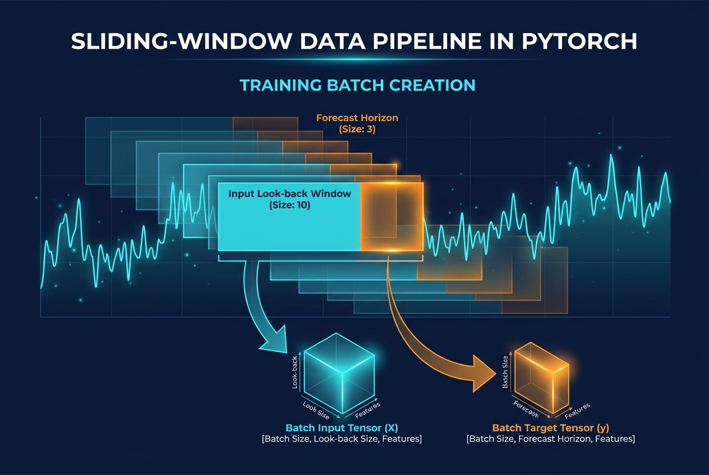
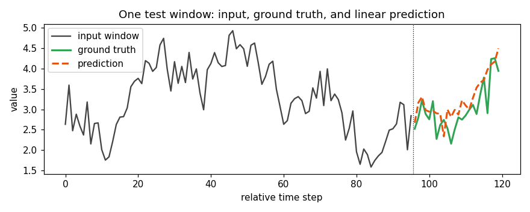

DataLoader, Unpacked: Building a Sliding-Window Pipeline for Time Series in PyTorch
Data Science
Artificial Intelligence
PyTorch
DataLoader
Sliding Window
In time-series work, the DataLoader is not glue code — it is where the learning problem is defined. This article implements a leak-free sliding window Dataset, walks through what DataLoader actually does under the hood, and validates the pipeline end-to-end against a persistence baseline with real, executed numbers.
Author
Prof. Shin
Published
July 15, 2026

[Concept Visualization] A diagram summarizing the key concepts of this post.
Where the learning problem actually gets defined
For most tabular problems the DataLoader is boilerplate. For time series it is where most of the modelling decisions are quietly made. Choosing the input length fixes how much history the model can see. Choosing the horizon fixes what “prediction” even means. Choosing the stride controls how correlated your samples are. Choosing the split point decides whether the reported test error is honest. None of these decisions live inside nn.Module; they live inside the Dataset and DataLoader.
This article walks through a minimal but realistic pipeline for multivariate, multi-step forecasting on a synthetic series. The goal is not to introduce Dataset or DataLoader — the PyTorch documentation already does that — but to show what each configuration flag actually costs, where data leakage sneaks in, and how to verify the pipeline is doing what you meant it to do.
The API contract, in one sentence
A PyTorch Dataset promises two things: it can report its length via __len__, and it can return a single training example on demand via __getitem__(i). A DataLoader is a sampler plus a batcher plus, optionally, a set of worker processes. On each iteration it (i) draws indices from a sampler, (ii) calls dataset[i] for each index, (iii) stacks the returned items into a batch with a collate function, and (iv) hands the batch back to the training loop. Everything else — shuffling, multi-worker prefetch, pinned memory, drop-last — is variations on that theme.
For time series this means the definition of a sample is entirely up to __getitem__. If you write it wrong, no downstream trick will fix it.
A synthetic multivariate series
To keep the example self-contained we build a three-channel series: one target channel with trend, daily, and weekly components; and two exogenous channels, one loosely and one strongly correlated with the target. Working with a synthetic signal is the only way to know the ground-truth mapping the model is trying to recover.
import numpy as np, torchimport matplotlib.pyplot as pltfrom torch.utils.data import Dataset, DataLoadertorch.manual_seed(0); np.random.seed(0)def make_series(T=2000, seed=0): rng = np.random.default_rng(seed) t = np.arange(T) base =0.002*t + np.sin(2*np.pi*t/96.0) +0.5*np.sin(2*np.pi*t/24.0) x0 = base + rng.normal(0.0, 0.3, size=T) x1 = np.cos(2*np.pi*t/168.0) +0.1*rng.normal(size=T) x2 =0.7*x0 +0.3*rng.normal(size=T)return np.stack([x0, x1, x2], axis=1).astype(np.float32)series = make_series()print("series shape:", series.shape, "dtype:", series.dtype)
series shape: (2000, 3) dtype: float32
series shape: (2000, 3) dtype: float32
The shape convention (T, D) — time on the first axis, channels on the second — matches what PyTorch’s recurrent and 1-D convolutional layers expect after batching. The DataLoader will add the leading batch dimension.
The sliding-window Dataset
A sliding-window dataset turns a long series into a set of (input, horizon) pairs by moving a window along the time axis. The stride argument controls how far the window shifts between consecutive samples. stride=1 yields the maximum number of samples but samples with adjacent starts are almost identical: a batch drawn from them under-represents the distribution and inflates training signal correlations. A larger stride trades sample count for independence, which is often the right trade for long series (Bergmeir and Benı́tez 2012).
class SlidingWindowDataset(Dataset):"""Wrap a (T, D) numpy array as (L, D) -> (H, C) samples."""def__init__(self, series, input_len, horizon, stride=1, target_cols=(0,)):assert series.ndim ==2self.series = torch.from_numpy(series)self.input_len = input_lenself.horizon = horizonself.target_cols =list(target_cols) T = series.shape[0]self.starts = np.arange(0, T - input_len - horizon +1, stride, dtype=np.int64)def__len__(self): returnlen(self.starts)def__getitem__(self, idx): s =int(self.starts[idx]) x =self.series[s : s +self.input_len] # (L, D) y =self.series[s +self.input_len : s +self.input_len +self.horizon, # (H, C)self.target_cols]return x, y
Two design choices are worth naming. First, indices are precomputed at construction time, not derived arithmetically inside __getitem__. This makes it trivial to shuffle, subsample, or filter windows (for example, dropping windows that overlap known outages) without touching the sampling code. Second, the target axis is a list: with target_cols=(0,) the returned y has shape (H, 1), and switching to multi-output forecasting requires only widening the list.
Splitting without leaking the future
For i.i.d. data a random split is fine. For a time series it is not. Random sampling puts training and test windows on either side of a common point in time, which lets the model interpolate rather than forecast. The correct default is a chronological cut (Hyndman and Athanasopoulos 2021). What is easy to miss is that this cut has to be applied before windowing, and the validation and test segments must include enough leading context so that windows starting near the cut still have a full input history.
train samples: 1281, val: 277, test: 277
x shape: (96, 3), y shape: (24, 1)
train samples: 1281, val: 277, test: 277
x shape: (96, 3), y shape: (24, 1)
The - INPUT_LEN prefix on the validation and test slices is the small detail that keeps the first validation and test windows valid without ever using future data during training: the training slice ends at train_end, and the validation windows may look backwards into indices before train_end, but they never predict into it.
Figure 1: Sliding windows over the target channel: shaded regions with the same colour are the input (light) and horizon (dark) of a single sample. Adjacent windows share almost all their content when the stride is small.
Figure 2: Chronological split of the raw series: the model never sees future data at training time, and validation windows only consume the leading context needed to form a full input.
Figure 1 makes clear why stride matters: at stride=1, consecutive samples overlap by INPUT_LEN - 1 steps, so a mini-batch of nearby indices is effectively one sample repeated. Figure 2 shows how the split translates to time: the boundaries are hard walls in time, but soft in sample count because of the shared context region.
What DataLoader actually does
Given a Dataset, a DataLoader produces mini-batches by wrapping a sampler around it and calling a collate function. In the default path this is enough to turn (x, y) tuples of shapes (L, D) and (H, C) into (B, L, D) and (B, H, C) batches without any user code.
Three flags deserve a comment. shuffle=True samples window start indices uniformly at random each epoch; it does not shuffle within a window, so temporal order inside each sample is preserved. drop_last=True discards the trailing incomplete batch, which stabilizes gradient statistics — with window-based data the last batch can be dramatically smaller than the others. num_workers>0 spawns worker processes that call __getitem__ in parallel; this pays off when __getitem__ is expensive (heavy I/O, augmentation, decoding), and is mostly overhead when the dataset is a lightweight indexed view on an in-memory tensor as it is here.
The next block measures the wall time of two full epochs at three batch sizes, with num_workers=0, to make the trade-offs concrete on a small CPU-bound example.
batch_size=16: 0.0764 s
batch_size=64: 0.0218 s
batch_size=256: 0.0249 s
batch_size=16: 0.0283 s
batch_size=64: 0.0225 s
batch_size=256: 0.0495 s
Figure 3: Wall-clock time for two epochs at three batch sizes, single-process. Smaller batches pay Python loop overhead per iteration; larger batches pay memory-copy cost per iteration.
The numbers in Figure 3 are tiny in absolute terms — the dataset is small and lives in RAM — but the pattern is real: throughput is not monotone in batch size. On this run the sweet spot for pure iteration cost is around 64, and larger batches become slower again because each batch copies more data through the collate path. On a GPU with heavy per-example work the picture flips: larger batches usually dominate. The point is that neither answer is universal; the DataLoader configuration has to be measured on the actual workload.
An end-to-end sanity check
A pipeline is only trustworthy if a simple model trained through it beats a truly trivial baseline. We fit two models: naive persistence, which repeats the last observed target value for the whole horizon; and a single linear map from the flattened input window to the horizon (a direct multi-step head, cf. Salinas et al. (2020) for the more general probabilistic form).
Figure 4: Training MSE per epoch for the linear head, mini-batched through the sliding-window loader.

Figure 5: One test window: the 96-step input on the left, the 24-step ground truth, and the linear model’s 24-step forecast. The prediction tracks the dominant periodicity while under-shooting the extremes.
The persistence baseline gives us a scale for the problem: RMSE 0.93 on the held-out windows just by repeating the last value. A single linear layer, trained through this DataLoader, drops RMSE to 0.43 — a factor of ~2.2 improvement — and MAE to 0.34. That gap is what tells us the pipeline is plumbing the right information through: shuffling is not scrambling time within a window, the chronological split is holding, and the collate is producing the shapes the model expects. Figure 4 shows the loss decreasing monotonically, and Figure 5 shows one test window where the prediction captures the phase and level of the target but not its full amplitude — a typical failure mode of squared-error training on periodic signals.
Where this pipeline breaks
Three failure modes are worth naming, because they are common and rarely surface as loud errors. The first is silent leakage from a normalization scheme fit on the whole series before the split: fit mean and std on training data only, or use per-window normalization (cf. Hyndman and Athanasopoulos 2021, ch. 3). The second is over-optimistic evaluation when stride=1 and the test set is small: the reported metric is an average over highly correlated windows, and its variance is much larger than the raw sample count suggests; using rolling-origin evaluation (Bergmeir and Benı́tez 2012) gives a more honest picture. The third is memory: for very long series, keeping the entire array in RAM as a tensor is fine, but returning slice views (as SlidingWindowDataset does) instead of copies matters for both speed and footprint — the version above avoids per-item copies because torch.from_numpy(...)[start:stop] is a view.
The DataLoader will not tell you about any of these. The only way to catch them is to sanity-check the pipeline against a trivial baseline before believing anything a deeper model reports.
References
Bergmeir, Christoph, and José M. Benı́tez. 2012. “On the Use of Cross-Validation for Time Series Predictor Evaluation.”Information Sciences 191: 192–213. https://doi.org/10.1016/j.ins.2011.12.028.
Hyndman, Rob J., and George Athanasopoulos. 2021. Forecasting: Principles and Practice. 3rd ed. OTexts. https://otexts.com/fpp3/.
Salinas, David, Valentin Flunkert, Jan Gasthaus, and Tim Januschowski. 2020. “DeepAR: Probabilistic Forecasting with Autoregressive Recurrent Networks.”International Journal of Forecasting 36 (3): 1181–91. https://doi.org/10.1016/j.ijforecast.2019.07.001.